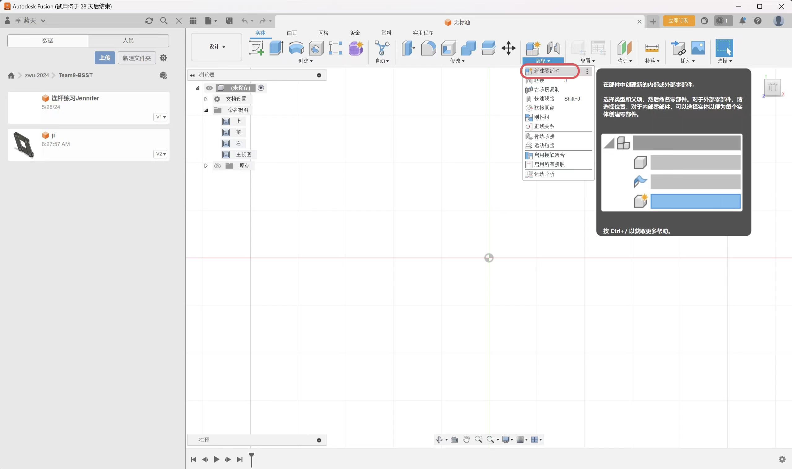
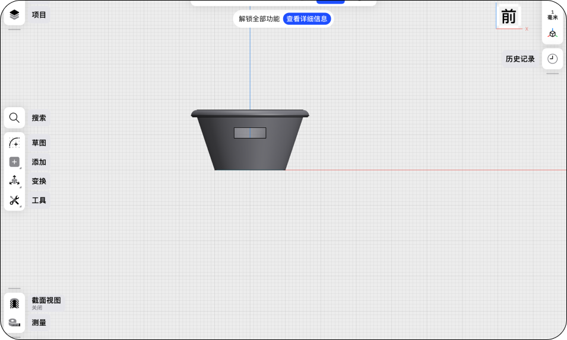
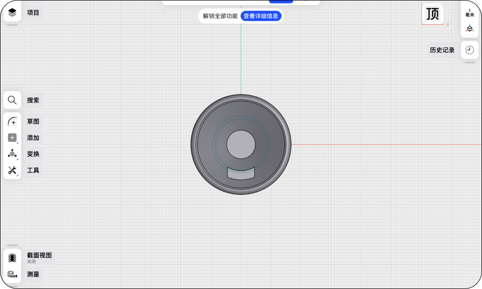
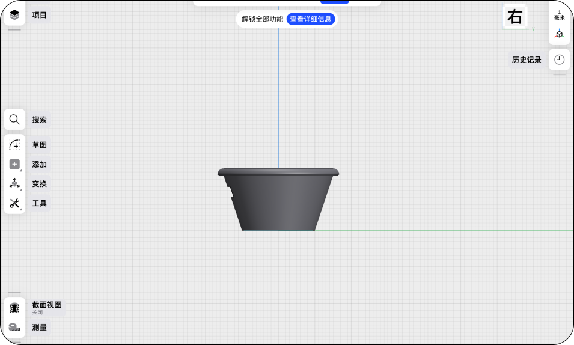
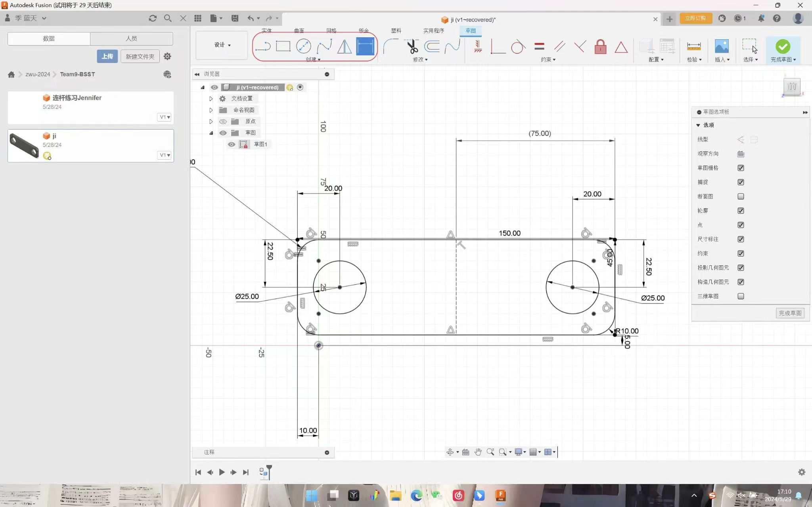
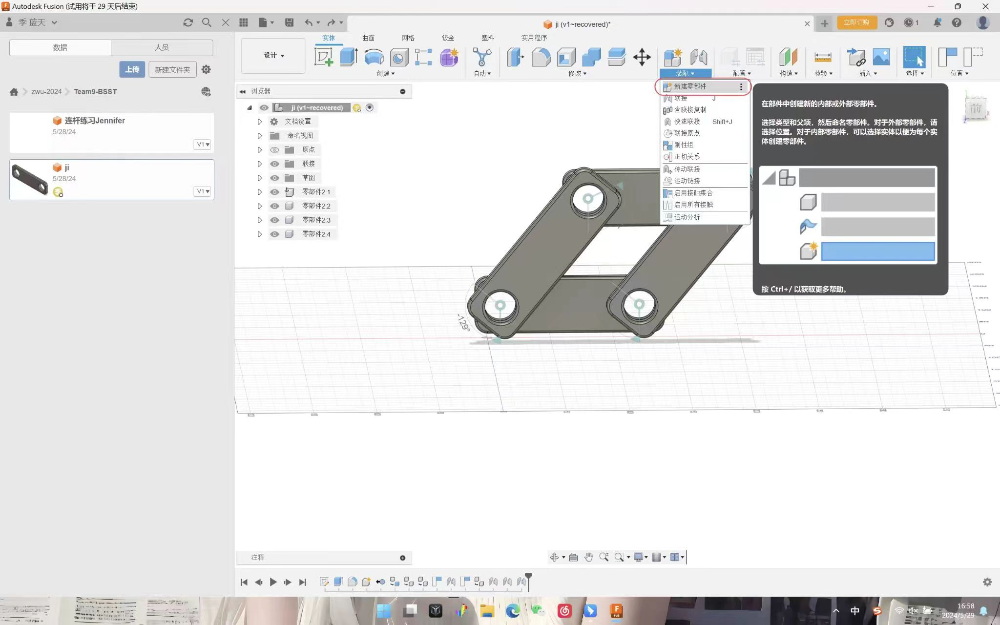
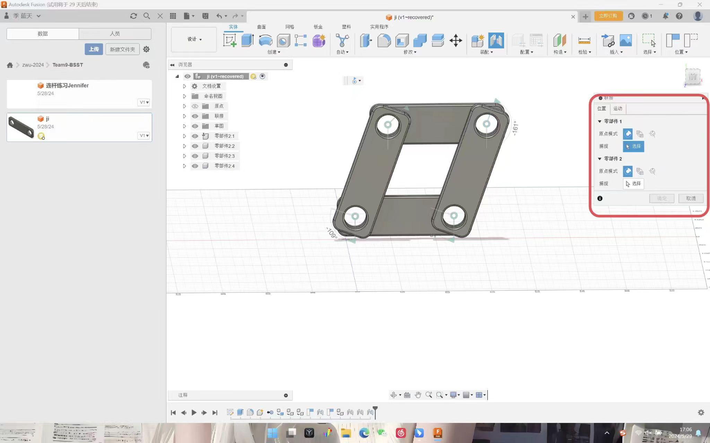
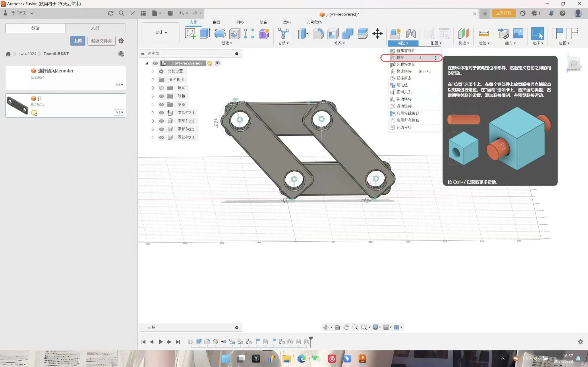
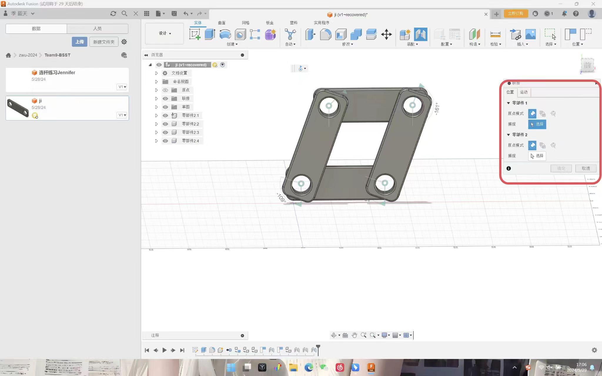
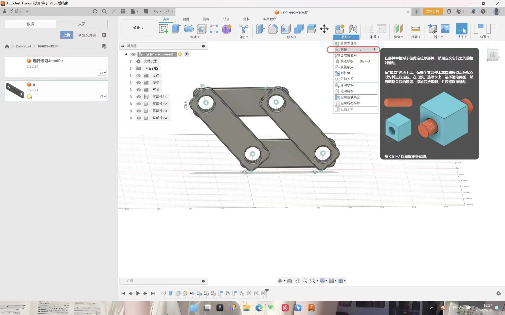

BBST
Final
Course → Computer aided design
BSST Team | ZWU
2024.6
1.Class Practice
(AUTODESK FUSION & SHAPR 3D)

2.Final project component



This is one of the parts of the last work we made. It is a pot bottom tray.
We use the above methods to make it. After each part is made, we will then
customise the parts.


Using connections to achieve twisted connections between parts.
Fix the center of the circle at the same position in the specific selection.
Determine the motion mode between the connected parts.

Fix the center of the circle at the same position in the specific selection.
Determine the motion mode between the connected parts.
 



Four point twisted connection, moving with mouse drag.